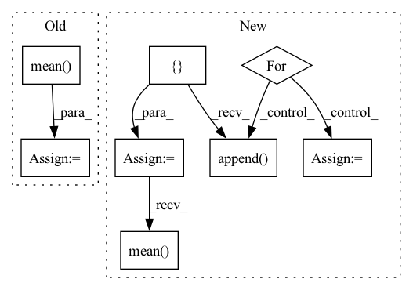

Pattern ID :14618

Before Change
)
q_loss = (q_delta * sampling_weigths).mean()
bg_delta = torch.nn.functional.smooth_l1_loss(
qs_pred[:, 0] * (1 - obs["fg_mask"].float()),
torch.zeros_like(qs_pred)[:, 0],
reduction="none",
).mean(dim=(1, 2))
bg_loss = (bg_delta * sampling_weigths).mean()
loss = q_loss + bg_loss
loss.backward()
After Change
q_loss = (q_delta * sampling_weigths).mean()
bg_mask = 1 - obs["fg_mask"]
q_bg_pred = []
for b in range(bg_mask.shape[0]):
y, x = torch.where(bg_mask[b])
i = torch.randint(low=0, high=len(y), size=()).item()
q_bg_pred.append(qs_pred[b, 0, y[i], x[i]])
q_bg_pred = torch.stack(q_bg_pred)
q_bg_delta = torch.nn.functional.smooth_l1_loss(
q_bg_pred,
torch.zeros_like(q_bg_pred),
reduction="none",
)
q_bg_loss = (q_bg_delta * sampling_weigths).mean()
loss = q_loss + q_bg_loss
loss.backward()
In pattern: SUPERPATTERN
Frequency: 3
Non-data size: 8
Instances
Fragment ID: 47961899
Project Name: wkentaro/reorientbot
Commit Name: c0652660c3e748a3405e22a324ef4e518d03c096
Time: 2021-05-05
Author: www.kentaro.wada@gmail.com
File Name: examples/grasp_with_intent/agent.py
M Class Name: DqnAgent
N Class Name: DqnAgent
M Method Name: _update_q(2)
N Method Name: _update_q(2)
M Parent Class: Agent
N Parent Class: Agent
M File Name: examples/grasp_with_intent/agent.py
N File Name: examples/grasp_with_intent/agent.py
M Start Line: 132
M End Line: 178
N Start Line: 132
N End Line: 185
'>
Before Change
)
q_loss = (q_delta * sampling_weigths).mean()
bg_delta = torch.nn.functional.smooth_l1_loss(
qs_pred[:, 0] * (1 - obs["fg_mask"].float()),
torch.zeros_like(qs_pred)[:, 0],
reduction="none",
).mean(dim=(1, 2))
bg_loss = (bg_delta * sampling_weigths).mean()
loss = q_loss + bg_loss
loss.backward()
After Change
q_loss = (q_delta * sampling_weigths).mean()
bg_mask = 1 - obs["fg_mask"]
q_bg_pred = []
for b in range(bg_mask.shape[0]):
y, x = torch.where(bg_mask[b])
i = torch.randint(low=0, high=len(y), size=()).item()
q_bg_pred.append(qs_pred[b, 0, y[i], x[i]])
q_bg_pred = torch.stack(q_bg_pred)
q_bg_delta = torch.nn.functional.smooth_l1_loss(
q_bg_pred,
torch.zeros_like(q_bg_pred),
reduction="none",
)
q_bg_loss = (q_bg_delta * sampling_weigths).mean()
loss = q_loss + q_bg_loss
loss.backward()
'>
Fragment ID: 47961881
Project Name: wkentaro/safepicking
Commit Name: c0652660c3e748a3405e22a324ef4e518d03c096
Time: 2021-05-05
Author: www.kentaro.wada@gmail.com
File Name: examples/grasp_with_intent/agent.py
M Class Name: DqnAgent
N Class Name: DqnAgent
M Method Name: _update_q(2)
N Method Name: _update_q(2)
M Parent Class: Agent
N Parent Class: Agent
M File Name: examples/grasp_with_intent/agent.py
N File Name: examples/grasp_with_intent/agent.py
M Start Line: 132
M End Line: 178
N Start Line: 132
N End Line: 185
'>
Before Change
metric += sklearn_metrics.mean_squared_error(y_true_los, y_pred_los)
elif metrics_strategy == "MAPE":
metric += sklearn_metrics.mean_absolute_percentage_error(y_true_los, y_pred_los)
metric += np.mean(
np.abs(y_true_outcome - y_pred_outcome)
* max_visits
* np.array(list(map(lambda x: sigma_func(x), y_true_los)))
)
if verbose:
print("LOS Score:", metric)
return metric
After Change
- y/predictions are already flattened here
- so we don"t need to consider visits_length
metric = []
num_records = len(y_pred_outcome)
for i in range(num_records):
cur_outcome_pred = y_pred_outcome[i]
cur_los_pred = y_pred_los[i]
cur_gt = y_true[i, :]
cur_outcome_true = cur_gt[0]
cur_los_true = cur_gt[1]
prediction_result = calculate_outcome_prediction_result(
cur_outcome_pred, cur_outcome_true
)
metric.append(
sigma(
cur_los_pred,
cur_los_true,
large_los,
thresholds,
case=prediction_result,
)
)
result = np.array(metric)
if verbose:
print("Early Prediction Score:", result)
return result.mean(axis=0)
'>
Fragment ID: 47961879
Project Name: yhzhu99/covid-ehr-benchmarks
Commit Name: fc9fcafdeae37b009acb4acf87682f0d86306e69
Time: 2022-06-29
Author: yhzhu99@gmail.com
File Name: app/core/evaluation/covid_metrics.py
M Class Name: AnonimousClass
N Class Name: AnonimousClass
M Method Name: multitask_los_metric(6)
N Method Name: multitask_los_metric(7)
M Parent Class:
N Parent Class:
M File Name: app/core/evaluation/covid_metrics.py
N File Name: app/core/evaluation/covid_metrics.py
M Start Line: 83
M End Line: 116
N Start Line: 119
N End Line: 142